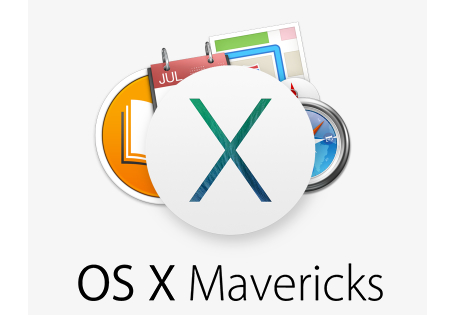

Apple Likely to Ship OS X Mavericks in October
Though Mavericks, the next version of Apple’s OS X desktop operating system, is currently in its seventh developer preview the OS is still a way off from public release. Mark Gurman at 9to5Mac reports, and AllThingsD has confirmed, that OS X 10.9 will not launch this month, but next. Sources said Mavericks will arrive at market sometime in late October, well after the release of iOS 7, a redesigned version of Apple’s mobile operating system whose development has taxed the company’s engineering resources. As we have reported in the past, Apple has had to shift engineers away from OS X in order to meet the aggressive iOS 7 launch timeline it set for itself.
Though a firm Mavericks launch date couldn’t be learned, it’s possible that Apple may plan to ship the OS after it next reports earnings, something it did with both OS X Lion in 2011 and OS X Mountain Lion. Another possibility: Mavericks debuts alongside the new Mac Pro and iMacs and MacBook Pros based on Intel’s Haswell processors.